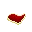
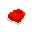
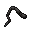

Guide to Food and Drink¶
Understanding Nutrition =¶
In Unitystation, every character has a nutrition value that determines how full their stomach is. The nutrition value goes from 1 to 500, and every character has 400 nutrition at the start of a round. You will receive different messages in the chat log and possibly effects depending on how much nutrition you have.
- 500 Nutrition: "You're stuffed!", you won't be able to eat any more food at this point.
- 300 Nutrition: "You're satiated.", no effect.
- 200 Nutrition: "You feel hungry.", no effect.
- 100 Nutrition: "Your stomach rumbles violently.", no effect.
- 000 Nutrition: "Your malnourished body aches!", you start to slow down!
You will gradually lose nutrition over time, though different actions cause different amounts of nutrition loss. Running around will cause you to go hungrier faster than walking around or staying still.
Drinks¶
To be continued...
Food¶
To be continued...
Ingredients¶
Basic items used to make other foods. You can eat them but you won't get much nutrition from them.
Below are a few kinds (not all) of meat. To obtain meat, butcher creatures by using a knife on them while on harm intent.
| Picture | Recipe | Ingredients | Nutritional Value | Notes |
|---|---|---|---|---|
|  | Meat | Butcher a dead creature. | 148 | |
|  | Killer Tomato Meat | Use a knife on a killer-tomato | 148 | |
|  | Spider Leg | Butcher a spider (such as Sergeant Araneus). | 75 | Spiders give you eight of these. |